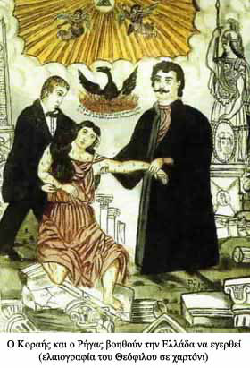

| Νεοελληνικός Διαφωτισμός  Πνευματική κίνηση που χρονολογείται από το δεύτερο μισό του 18ου αι. και αποτελεί αναπόσπαστο μέρος του ευρωπαϊκού διαφωτισμού. Κύρια στοιχεία του διαφωτισμού είναι η εκκοσμίκευση της γνώσης, η πίστη στον ορθό λόγο και η διάδοση των επιστημών, η υπεράσπιση της ελευθερίας ως υπέρτατου αγαθού και η διακήρυξη των δικαιωμάτων του ατόμου και του πολίτη. Οι ιδέες του διαφωτισμού συνδέθηκαν στον ελλαδικό χώρο κυρίως με την προσπάθεια καλλιέργειας εθνικής συνείδησης και την προετοιμασία της εθνικής εξέγερσης. Φωτισμένοι άνθρωποι από τον κύκλο των Φαναριωτών των Παραδουνάβιων Ηγεμονιών, κληρικοί, διανοούμενοι και πλούσιοι έμποροι που ζούσαν στις ελληνικές παροικίες του εξωτερικού αναδείχθηκαν φορείς του νεοελληνικού Διαφωτισμού. Με δικές τους πρωτοβουλίες ιδρύθηκαν ελληνικά σχολεία σε πολλές περιοχές της Οθωμανικής αυτοκρατορίας στα οποία δίδαξαν εμπνευσμένοι δάσκαλοι, συγκροτήθηκαν βιβλιοθήκες και τυπογραφεία, ενώ με τα συγγράμματά τους μόρφωσαν το ελληνικό γένος. Ο Αδαμάντιος Κοραής και ο Ρήγας Βελεστινλής αναφέρονται ανάμεσα στους σημαντικότερους Έλληνες Διαφωτιστές. |
||